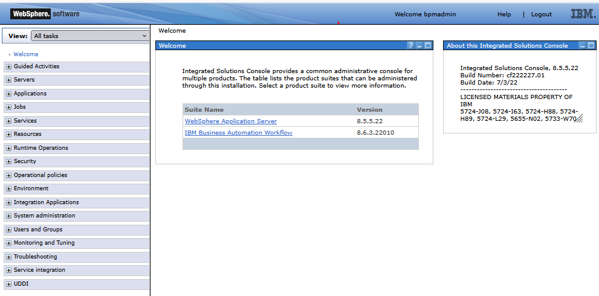

Setting Up Trust Between WebSphere Servers with Retrieve from Port
Import a certificate from a remote SSL port into a WebSphere TrustStore.
Overview
This article walks through importing a certificate from a remote server into a WebSphere Application Server (WAS)
TrustStore using Retrieve from Port. This is commonly used when you need SSL/TLS trust between
WebSphere servers, backend services, or cluster nodes.
Automatically retrieve the certificate from an SSL port
Import it into the right TrustStore
Synchronize changes to nodes when running a cluster
Restart the application to apply the updated trust settings
1. Open the WAS Admin Console
Sign in to the WAS Admin Console on the server you want to configure.
https://<Server-B>:9043/ibm/console

2. Navigate to the TrustStore
Go to the SSL certificate and key management area.
Security → SSL certificate and key management → Key stores and certificates
Choose the appropriate TrustStore:
CellDefaultTrustStore for the entire cell
NodeDefaultTrustStore for a specific node
ServerDefaultTrustStore for a single JVM
This guide uses CellDefaultTrustStore as the example.
3. Retrieve the Certificate from the Remote Server
Open the Signer Certificates tab and select Retrieve from port.
Enter the remote server details, then click Retrieve signer information.
Review the certificate details before importing it.
If the certificate looks correct, click OK to import it into the TrustStore.
4. Synchronize Nodes if You Are Running a Cluster
If the environment is a cluster, synchronize the changes to the remaining nodes.
Select Synchronize changes with Nodes and save the configuration.
Click Save and confirm with OK.
5. Restart the Application
After the trust data is imported, restart the application so the changes take effect.
Servers → All servers
Select the application and click Restart.
Checklist
Log in to the WAS Admin Console.
Go to Security → SSL certificate and key management.
Choose the correct TrustStore.
Retrieve the certificate from the remote SSL port.
Import the certificate, synchronize nodes if needed, and restart the app.